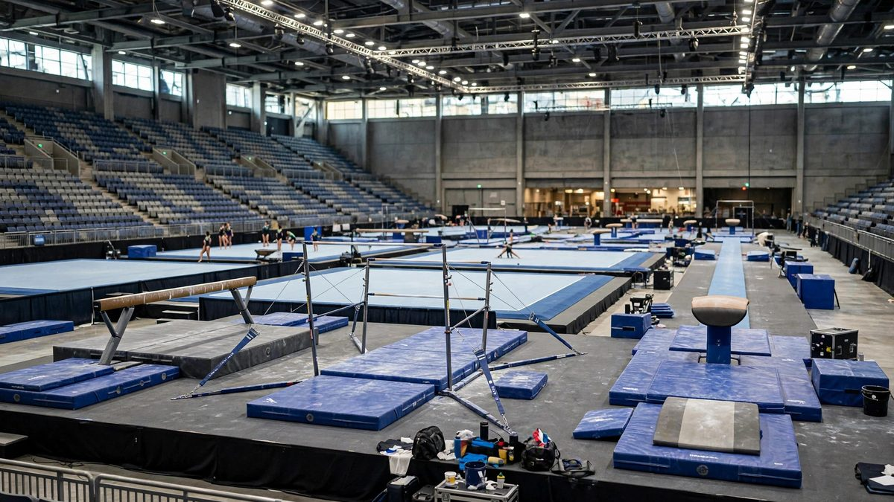

रॉटरडैम में जिम्नास्टिक्स विश्व: कार्यक्रम, कैसे देखें, मुख्य तारीखें
2026 विश्व कलात्मक जिम्नास्टिक्स चैंपियनशिप 17 से 25 अक्टूबर तक Rotterdam Ahoy में चलती है, क्वालीफाइंग EurovisionSport.com पर और फाइनल Peacock और NBCSN पर।

मुख्य बिंदु
- अपडेट 23:59 UTC, 21 अक्टूबर 2026। चीन ने बुधवार को रॉटरडैम में विश्व चैंपियनशिप के महिला टीम फाइनल में अमेरिका को हराया। चीन के 165.764 अंक रहे, जबकि अमेरिका के 165.531 अंक रहे, USA Today और NBC…
- 2006 के बाद चीन का पहला विश्व टीम खिताब फाइनल की आखिरी रूटीन पर तय हुआ। अमेरिका को पीछे छोड़ने के लिए Qiu Qiyuan को फ्लोर पर 12.6 से अधिक अंक चाहिए थे, और उन्होंने 12.833 अंक बनाए। Skye Blakely,…
- फ्रांस 161.130 अंक के साथ चौथे स्थान पर रहा, उसके बाद ब्राजील 159.730, World Gymnastics 2 के नाम से खेल रही टीम 159.394, इटली 158.129 और कनाडा 158.096 पर रहे। Caylor क्वालीफाइंग से पहले बाएं टखने…
अपडेट 23:59 UTC, 21 अक्टूबर 2026। चीन ने बुधवार को रॉटरडैम में विश्व चैंपियनशिप के महिला टीम फाइनल में अमेरिका को हराया। चीन के 165.764 अंक रहे, जबकि अमेरिका के 165.531 अंक रहे, USA Today और NBC Sports ने बताया। अंतर सिर्फ 0.233 अंक का था। अमेरिका की महिलाओं ने 2010 के बाद पहली बार विश्व टीम खिताब गंवाया है, और 2011 में शुरू हुआ लगातार सात खिताबों का क्रम टूट गया है। जापान ने 164.063 अंक के साथ कांस्य जीता, जो 1966 के बाद उसका पहला विश्व टीम पदक है। पदक जीतने वाली तीनों टीमों को लॉस एंजिल्स 2028 ओलंपिक के लिए सीधी टीम जगह मिलती है।
2006 के बाद चीन का पहला विश्व टीम खिताब फाइनल की आखिरी रूटीन पर तय हुआ। अमेरिका को पीछे छोड़ने के लिए Qiu Qiyuan को फ्लोर पर 12.6 से अधिक अंक चाहिए थे, और उन्होंने 12.833 अंक बनाए। Skye Blakely, Charleigh Bullock, Dulcy Caylor, Reese Esponda और Claire Pease वाली अमेरिकी टीम वॉल्ट और असमान बार के दो रोटेशन के बाद करीब दो अंक आगे थी। बैलेंस बीम ने फाइनल बदल दिया। Zhang Qingying ने 15.066 अंक बनाए, जो फाइनल में किसी भी उपकरण पर सबसे अधिक अंक थे, और चीन की तीन बीम रूटीनों ने 43.366 अंक जोड़े, जबकि अमेरिका के 39.199 अंक ही बने। Caylor बीम से उतरते समय गिर गईं और उन्हें 12.333 अंक मिले। फ्लोर से पहले चीन करीब 2.2 अंक आगे था, और अमेरिका ने अधिकांश अंतर घटाया, लेकिन पूरा नहीं।
फ्रांस 161.130 अंक के साथ चौथे स्थान पर रहा, उसके बाद ब्राजील 159.730, World Gymnastics 2 के नाम से खेल रही टीम 159.394, इटली 158.129 और कनाडा 158.096 पर रहे। Caylor क्वालीफाइंग से पहले बाएं टखने की चोट के कारण बाहर हुईं पेरिस ओलंपिक स्वर्ण विजेता Hezly Rivera की जगह खेल रही थीं। चैंपियनशिप गुरुवार को पुरुष ऑल अराउंड फाइनल और शुक्रवार को महिला ऑल अराउंड फाइनल के साथ जारी रहेगी।
अपडेट 21:52 UTC, 20 अक्टूबर 2026। जापान ने मंगलवार को रॉटरडैम में विश्व चैंपियनशिप के पुरुष टीम फाइनल में 251.928 अंक के साथ जीत हासिल की और विश्व चैंपियन बना रहा, USA Today और NBC Sports ने बताया। World Gymnastics 2 के नाम से खेल रही रूस की टीम 250.329 अंक के साथ दूसरे स्थान पर रही और चीन 249.193 अंक के साथ तीसरे स्थान पर रहा। तीनों पदक विजेता टीमों को लॉस एंजिल्स 2028 ओलंपिक के लिए सीधी टीम जगह मिली।
अमेरिका 245.161 अंक के साथ छठे स्थान पर रहा, चौथे स्थान पर रहे ब्रिटेन (247.395) और पाँचवें स्थान पर रहे स्विट्जरलैंड (246.497) के पीछे। नीदरलैंड 241.294 अंक के साथ सातवें और कोलंबिया 240.093 अंक के साथ आठवें स्थान पर रहा। छठा स्थान 2006 के बाद किसी ओलंपिक या विश्व चैंपियनशिप में अमेरिकी पुरुषों का सबसे निचला स्थान है, और इसका मतलब है कि अमेरिका रॉटरडैम में सीधी ओलंपिक टीम जगह से चूक गया। टीम 2027 विश्व चैंपियनशिप में अब भी क्वालीफाई कर सकती है, जहाँ आखिरी नौ टीम जगहें तय होंगी।
जापान की अगुवाई पिछले दो ओलंपिक ऑल अराउंड चैंपियन दाइकी हाशिमोतो और शिन्नोसुके ओका ने की। हाशिमोतो ने सभी छह उपकरणों पर प्रतिस्पर्धा की और हाई बार पर 14.866 अंक के साथ फाइनल समाप्त किया। जापान ने अब लगातार तीन ओलंपिक या विश्व टीम खिताब जीते हैं, जो 1960 से 1978 के दौर के बाद शीर्ष पर उसकी सबसे लंबी अवधि है। रूसी टीम ने टोक्यो ओलंपिक जीतने के बाद पहली बार किसी वैश्विक चैंपियनशिप की टीम स्पर्धा में हिस्सा लिया, World Gymnastics 2 नाम के तहत तटस्थ टीम के रूप में।
अमेरिका के लिए पैट्रिक हूप्स ने पोमेल हॉर्स पर 14.833 अंक बनाए, जो फाइनल में किसी भी उपकरण पर अमेरिकी पुरुषों का सबसे ऊँचा स्कोर था। फ्रेडरिक रिचर्ड, इस टीम में 2024 ओलंपिक कांस्य पदक टीम के एकमात्र सदस्य, पोमेल हॉर्स पर गिर गए और उन्हें 12.866 अंक मिले। महिलाओं का टीम फाइनल बुधवार, 21 अक्टूबर को होगा।
अपडेट 16:05 UTC, 17 अक्टूबर 2026। पेरिस ओलंपिक स्वर्ण पदक विजेता और दो बार की अमेरिकी ऑल अराउंड चैंपियन हेज़ली रिवेरा बाएं टखने की चोट के कारण रॉटरडैम में विश्व चैंपियनशिप से हट गई हैं, USA Today और NBC Sports ने शनिवार को बताया। पाँच सदस्यीय अमेरिकी टीम की एकमात्र ओलंपियन रिवेरा गुरुवार के प्रशिक्षण में सीमित रहीं और अमेरिकी महिलाओं के क्वालीफाइंग में उतरने से एक दिन पहले शनिवार के प्रशिक्षण सत्र के बाद हट गईं। वैकल्पिक खिलाड़ी डल्सी केलर टीम में उनकी जगह लेंगी, और अमेरिकी महिलाएं रविवार को सुबह 10 बजे ET पर क्वालीफाइंग शुरू करेंगी। रिवेरा ने 2025 अमेरिकी चैंपियनशिप के कुछ समय बाद भी यही टखना मोड़ा था, और उस चोट ने उन्हें 2025 विश्व चैंपियनशिप से भी बाहर रखा था। स्काई ब्लेकली अब अमेरिकी टीम की एकमात्र जिमनास्ट हैं जिन्होंने ओलंपिक या विश्व चैंपियनशिप में टीम प्रतियोगिता में भाग लिया है।
2026 विश्व कलात्मक जिम्नास्टिक्स चैंपियनशिप 17 से 25 अक्टूबर तक नीदरलैंड के रॉटरडैम में Rotterdam Ahoy में चलती है। क्वालीफाइंग 17 से 19 अक्टूबर तक प्रतियोगिता खोलता है, और सभी क्वालीफाइंग सत्र EurovisionSport.com पर लाइव स्ट्रीम होते हैं। फाइनल Peacock और NBCSN पर आते हैं, NBC पर रविवार 25 अक्टूबर को दोपहर ET पर हाइलाइट शो के साथ।
ये पेरिस ओलंपिक के बाद से वैश्विक चैंपियनशिप में पहले टीम इवेंट हैं। यही बात दांव बढ़ा देती है। टीमों को नए ओलंपिक चक्र की पहली साफ झलक मिलती है, और प्रत्येक टीम फाइनल में शीर्ष तीन टीमों को लॉस एंजिल्स 2028 ओलंपिक के लिए सीधे स्थान मिलते हैं।
पहले क्वालीफाइंग
पुरुषों का क्वालीफाइंग शनिवार 17 अक्टूबर को शुरू होता है। महिलाओं का क्वालीफाइंग 18 से 19 अक्टूबर तक चलता है। अमेरिका के पुरुषों का क्वालीफाइंग सत्र शनिवार 17 अक्टूबर को दोपहर 2:10 बजे ET पर है, EurovisionSport.com पर स्ट्रीम।
क्वालीफाइंग फाइनल भरने से ज्यादा करता है। शीर्ष आठ टीमें टीम फाइनल तक पहुंचती हैं। शीर्ष 24 जिम्नास्ट प्रत्येक ऑल-अराउंड फाइनल तक पहुंचते हैं, प्रति देश अधिकतम दो के साथ। प्रत्येक उपकरण पर शीर्ष आठ उपकरण फाइनल तक पहुंचते हैं। क्वालीफाइंग में खराब दिन फाइनल शुरू होने से पहले पदक का मौका खत्म कर सकता है।
कनाडा जल्दी खोलता है। कनाडा के पुरुष 17 अक्टूबर को क्वालीफाइंग खोलते हैं और उसकी महिलाएं 19 अक्टूबर को प्रतिस्पर्धा करती हैं। कनाडा पांच पुरुष भेजता है: Jordan Carroll, Rene Cournoyer, Felix Dolci, Xavier Olasz और Sam Zakutney। कनाडा पांच महिलाएं भेजता है: Ellie Black, Gabrielle Black, Coralie Demers, Lia-Monica Fontaine और Lia Redick।
फाइनल कार्यक्रम
पुरुषों का टीम फाइनल मंगलवार 20 अक्टूबर को है। महिलाओं का टीम फाइनल बुधवार 21 अक्टूबर को है। पुरुषों का ऑल-अराउंड फाइनल गुरुवार 22 अक्टूबर को है। महिलाओं का ऑल-अराउंड फाइनल शुक्रवार 23 अक्टूबर को है। उपकरण फाइनल शनिवार 24 और रविवार 25 अक्टूबर को होते हैं।
अमेरिका में फाइनल Peacock और NBCSN पर आते हैं। NBC रविवार 25 अक्टूबर को दोपहर ET पर हाइलाइट शो देता है। क्वालीफाइंग सप्ताह का स्ट्रीमिंग हिस्सा है, प्रत्येक सत्र के लिए EurovisionSport.com पर।
अमेरिका की महिलाएं और लंबी लय
अमेरिका की महिलाओं ने 2011 से पिछले सात विश्व टीम खिताब जीते हैं। वह लय उन्हें रॉटरडैम में फिर से हराने वाली टीम बनाती है। इस बार परीक्षा असली लगती है। अमेरिका की महिलाओं को चीन और रूस से चुनौती मिलने की उम्मीद है।
अमेरिकी टीम में नया अहसास भी है। इस साल की अमेरिका की महिला टीम की किसी जिम्नास्ट ने पहले ओलंपिक या विश्व में ऑल-अराउंड में प्रतिस्पर्धा नहीं की है। इसका मतलब है सबसे बड़े स्थानों पर नए नाम, और इस स्तर पर भरोसा करने के लिए कोई पिछला ऑल-अराउंड रिकॉर्ड नहीं। 21 अक्टूबर को टीम फाइनल को वे कैसे संभालती हैं, यह अगले दो वर्षों के बारे में बहुत कुछ बताएगा।
टीम फाइनल सिर्फ पदकों के बारे में नहीं है। प्रत्येक टीम फाइनल में शीर्ष तीन टीमों को लॉस एंजिल्स 2028 के लिए सीधे ओलंपिक स्थान मिलते हैं। इस सप्ताह पोडियम पर स्थान पूरे चक्र के लिए कार्यक्रम का रास्ता तय कर सकता है।
मुख्य आंकड़े और नियम
तारीखें: 17 से 25 अक्टूबर। स्थान: Rotterdam Ahoy, रॉटरडैम, नीदरलैंड। टीम फाइनल कट: क्वालीफाइंग से शीर्ष आठ टीमें। ऑल-अराउंड कट: शीर्ष 24 जिम्नास्ट, प्रति देश अधिकतम दो। उपकरण कट: प्रत्येक उपकरण पर शीर्ष आठ। ओलंपिक पुरस्कार: प्रत्येक टीम फाइनल में शीर्ष तीन टीमों को लॉस एंजिल्स 2028 के लिए सीधे स्थान। अमेरिका की महिला टीम खिताब लय: 2011 से लगातार सात विश्व टीम खिताब।
वीजा पर विवाद
प्रतियोगिता पर एक विवाद मंडरा रहा है। TASS की रिपोर्टिंग के अनुसार, नीदरलैंड ने रूसी जिम्नास्ट Angelina Melnikova, Viktoria Listunova और Anna Kalmykova को वीजा देने से इनकार कर दिया, और रूसी ओलंपिक समिति ने इवेंट का ओलंपिक क्वालीफाइंग दर्जा हटाने के लिए कहा। रूसी कोच Valentina Rodionenko ने 14 अक्टूबर को TASS को बताया कि क्वालीफाइंग दर्जा बना रहेगा।
वह रिपोर्टिंग मायने रखती है क्योंकि ओलंपिक स्थान इस प्रतियोगिता का केंद्रीय हिस्सा हैं। फिलहाल, उस TASS रिपोर्ट के आधार पर, क्वालीफाइंग दर्जा बना रहता है।
यह क्यों मायने रखता है
रॉटरडैम में विश्व चैंपियनशिप लॉस एंजिल्स 2028 की राह की शुरुआत है। यह पेरिस के बाद पहली टीम परीक्षा है, टीमों के लिए सीधे ओलंपिक स्थान कमाने का पहला मौका है, और यह देखने का पहला अवसर है कि पिछले खेलों के बाद कौन से कार्यक्रम सबसे अच्छे से फिर बने हैं।
प्रशंसकों के लिए यह स्पष्ट क्रम में फाइनल का पूरा सप्ताह भी है। पहले टीम फाइनल, फिर ऑल-अराउंड फाइनल, फिर अंत में उपकरण फाइनल। प्रत्येक रात एक अलग सवाल का जवाब देती है: सर्वश्रेष्ठ टीम, सर्वश्रेष्ठ ऑल-अराउंड जिम्नास्ट, प्रत्येक एकल उपकरण पर सर्वश्रेष्ठ।
आगे क्या होता है
19 अक्टूबर को क्वालीफाइंग खत्म होने के बाद प्रतियोगिता फाइनल की ओर मुड़ती है। 20 अक्टूबर को पुरुषों का टीम फाइनल उस सिलसिले को खोलता है, उसके बाद 21 अक्टूबर को महिलाओं का टीम फाइनल होता है। ऑल-अराउंड फाइनल 22 और 23 अक्टूबर को होते हैं, और उपकरण फाइनल 24 और 25 अक्टूबर को चैंपियनशिप खत्म करते हैं।
क्वालीफाइंग को ध्यान से देखें। वहां के स्कोर फाइनल के क्षेत्र तय करते हैं, दिखाते हैं कि कौन सी टीमें साफ हैं और कौन सी टीमें गिरने गिन रही हैं, और दिखाते हैं कि अमेरिका की महिलाओं की लय असली खतरे में है या नहीं। रविवार 25 अक्टूबर तक रॉटरडैम के पास नए विश्व चैंपियन होंगे और प्रत्येक टीम इवेंट में लॉस एंजिल्स के लिए पहले तीन ओलंपिक टीम स्थान टीम फाइनल परिणामों के आधार पर तय होंगे।
टाइमलाइन
- Oct 17, 2026पुरुषों का क्वालीफाइंग रॉटरडैम में चैंपियनशिप खोलता है; अमेरिका के पुरुष दोपहर 2:10 बजे ET पर प्रतिस्पर्धा करते हैं।
- Oct 17, 2026हेज़ली रिवेरा रॉटरडैम में प्रशिक्षण के बाद बाएं टखने की चोट के कारण अमेरिकी टीम से हट गईं। 18 अक्टूबर को अमेरिकी महिलाओं के क्वालीफाइंग से पहले डल्सी केलर उनकी जगह लेंगी।
- Oct 18, 2026महिलाओं का क्वालीफाइंग शुरू होता है; अमेरिका की महिलाएं 18 अक्टूबर को प्रतिस्पर्धा करती हैं।
- Oct 20, 2026पुरुष टीम फाइनल: जापान 251.928 अंक के साथ स्वर्ण जीता, World Gymnastics 2 (रूस) को रजत और चीन को कांस्य मिला; अमेरिका 245.161 अंक के साथ छठे स्थान पर रहा और लॉस एंजिल्स 2028 की सीधी जगह से चूक गया।
- Oct 21, 2026महिला टीम फाइनल: चीन ने 165.764 अंक के साथ स्वर्ण जीतकर अमेरिका के लगातार सात खिताबों का क्रम तोड़ा; अमेरिका ने 165.531 अंक के साथ रजत और जापान ने 164.063 अंक के साथ कांस्य जीता, जो 1966 के बाद जापान का पहला विश्व टीम पदक है।
- Oct 24, 2026उपकरण फाइनल शुरू होते हैं, 25 अक्टूबर को समाप्त होते हैं।
स्रोत
- NBC Sports: World Gymnastics Championships 2026, how to watch and schedule
- SIRC: Canada ready to compete at 2026 Artistic Gymnastics World Championships
- Gymnastics Now: How to watch the 2026 World Championships
- Rotterdam Style: 2026 Artistic Gymnastics World Championships in Rotterdam
- USA Today: Hezly Rivera out of gymnastics worlds with ankle injury in blow to US women
- NBC Sports: Hezly Rivera medically withdraws before World Gymnastics Championships
- USA Today: US men leave gymnastics worlds without Olympic berth after disappointing team final
- NBC Sports: Japan extends its longest men's gymnastics reign since its dynasty with repeat world team title
- USA Today: US women dethroned at gymnastics worlds by China after historic 15-year run
- NBC Sports: World Gymnastics Championships 2026, women's team final
- SuperSport: China end USA reign with women's team world gold